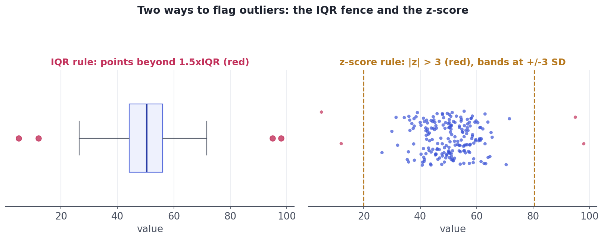
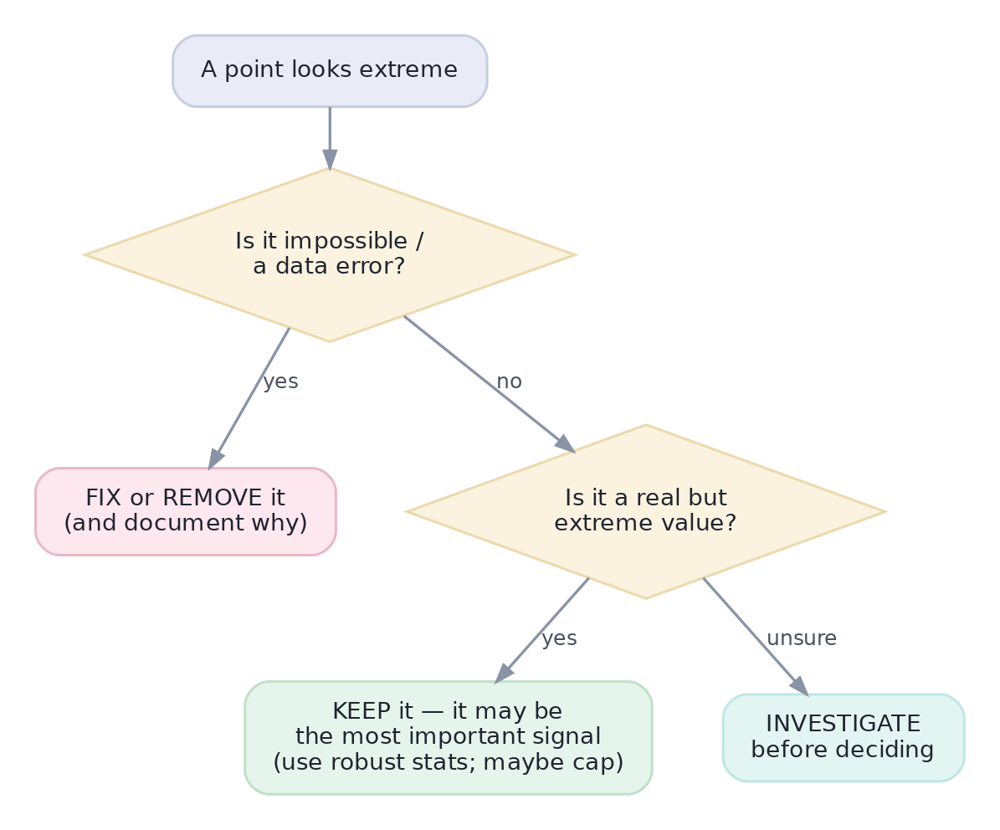

Outliers & Anomalies
Detect extremes (IQR, z-score), then decide: an error to fix, or the signal you're hunting?
An outlier — a value far from the rest — is the most consequential point in your dataset, for two opposite reasons. It might be an error (a typo, a broken sensor) that will wreck your averages and models if you leave it. Or it might be the signal you're hunting — the fraud, the system failure, the whale customer — that you'd be insane to delete. EDA's job is to find outliers and help you decide which kind each one is, deliberately, never on autopilot.
Concept · finding themDetecting outliers
Four complementary ways to flag suspicious points:
- Visually — a boxplot shows points beyond its whiskers; a scatter plot exposes points off the cloud. Always look first.
- The IQR rule — flag anything below Q1−1.5×IQR or above Q3+1.5×IQR (the boxplot's fence, from Lesson 4.2). Robust, since it's based on quartiles, not the mean.
- The z-score rule — flag points more than ~3 standard deviations from the mean (|z| > 3). Simple, but assumes a roughly normal spread and is itself distorted by extreme outliers.
- Domain limits — the best of all: a human age of 200 or a negative price is impossible by definition, no statistics required.

Concept · the judgmentDeciding what to do
Detection is the easy part; the decision is where judgment lives. Run each flagged point through one question first — is this an error, or a real extreme? — because the answer changes everything:

Never delete outliers reflexively to 'clean up' a chart or boost a model score. Deleting real extremes is how analysts miss fraud, hide system failures, and report a rosy average that the business never actually experiences. The default is investigate and keep; removal requires a justification you'd defend out loud.
Worked exampleFlag outliers two ways in code
Detect the same data's outliers with both the IQR fence and the z-score rule, and compare what each catches — then the human decides what they mean.
import numpy as np
rng = np.random.default_rng(3)
data = np.append(rng.normal(50, 8, 200), [5, 95, 98]) # 200 normal points + 3 extremes
# IQR rule (robust: based on quartiles)
q1, q3 = np.percentile(data, [25, 75]); iqr = q3 - q1
lo, hi = q1 - 1.5*iqr, q3 + 1.5*iqr
iqr_out = np.sort(data[(data < lo) | (data > hi)])
print(f"IQR fence [{lo:.0f}, {hi:.0f}] -> {len(iqr_out)} flagged: {np.round(iqr_out).astype(int)}")
# z-score rule (|z| > 3)
z = (data - data.mean()) / data.std()
z_out = np.sort(data[np.abs(z) > 3])
print(f"z-score |z|>3 -> {len(z_out)} flagged: {np.round(z_out).astype(int)}")
print("\nBoth flag the extremes. Now the real work: are 5, 95, 98 errors -- or the signal?")IQR fence [29, 72] -> 5 flagged: [ 5 27 77 95 98] z-score |z|>3 -> 3 flagged: [ 5 95 98] Both flag the extremes. Now the real work: are 5, 95, 98 errors -- or the signal?
★ Key points to remember
- An outlier may be an error (remove/fix) or the most important signal (keep) — decide, don't auto-delete.
- Detect: look (boxplot/scatter), the IQR rule (beyond 1.5×IQR), the z-score rule (|z| > 3), and domain limits (impossible values).
- The IQR rule is robust (quartile-based); the z-score rule assumes ~normal data and is itself skewed by outliers.
- Decision: error → fix/remove (document); real extreme → keep, use robust stats, maybe cap (winsorize); unsure → investigate.
- Outliers have outsized influence on the mean, SD, correlation, and many models — that's why finding them matters.
◆ Practice▸
Show solution & reasoning
- Visual (boxplot/scatter) — fast, shows context and shape, catches what rules miss. 2. IQR rule (beyond 1.5×IQR) — robust, quartile-based, works on skewed data. 3. z-score (|z|>3) — simple and intuitive for roughly normal data. 4. Domain limits — definitive: impossible values (negative price, age 200) are errors by definition, no statistics needed. Use several together.
delivery_time column has values 12, 15, 14, 16, 13, and 9000 (minutes). Walk through detecting and deciding.Show solution & reasoning
Detect: 9000 is obvious visually and via both rules (far beyond the IQR fence and >3 SD). Decide: ask whether 9000 minutes (~6 days) is an error or a real delivery. Likely a data-entry/sensor error (a stuck timer, or seconds logged as minutes) — investigate the source. If confirmed an error, fix (e.g., correct the unit) or remove it and document why; never just silently drop it. If it turned out to be a genuine 6-day delivery, you'd keep it (it's an important service failure) and report the median delivery time, which the 9000 barely moves.
◎ Deep dive: robust statistics, winsorizing vs. trimming, and multivariate outliers▸
Robust statistics resist outliers by design. The mean and standard deviation have a breakdown point of 0% — a single extreme value can drag them anywhere. Their robust cousins survive: the median and IQR tolerate up to 25–50% contamination, and the MAD~ (median absolute deviation) is a robust stand-in for the SD. When outliers are present and you can't remove them, reporting and modeling with robust statistics keeps your conclusions honest.
Winsorizing vs. trimming. Two transparent ways to limit outlier influence without pretending they don't exist: trimming drops the most extreme few percent, while winsorizing caps them at a percentile (e.g., set everything above the 99th percentile equal to the 99th percentile). Winsorizing keeps every row but bounds the extremes — useful for stabilizing a mean or a model input. Either way, state what you did; a silent cap is just another way to mislead.
Multivariate outliers hide from one-variable rules. A point can be perfectly normal on every single variable yet bizarre in combination — a 7-foot-tall person weighing 100 pounds is ordinary on height alone and weight alone, but the pair is an outlier. One-dimensional IQR/z-score checks miss these; you need scatter plots, pair plots (Lesson 5.9), or methods built for it (Mahalanobis distance, isolation forests in Track 8). It's a reminder that EDA must look at variables together, not just one at a time.
The trap is the candidate who says 'I remove outliers' reflexively. The strong answer: 'It depends — first I'd check whether each is an error or a real extreme. Errors I fix or drop with documentation; genuine extremes I keep, using robust statistics or transparent capping, because they're often the most important signal (fraud, failures).' Mentioning the IQR-vs-z-score robustness difference is a bonus.